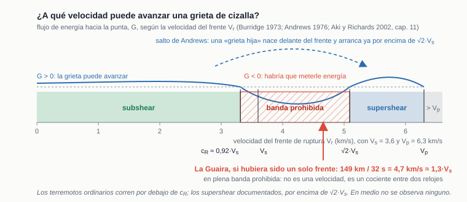

Fundamentos · sismofísica básica — La Guaira, 24-jun-2026
Sismofísica básica
Las ideas mínimas para leer el resto: qué se rompe, qué ondas salen, cómo se mide su tamaño y su geometría, y por qué La Guaira sintió tan fuerte.
Antes de los métodos conviene fijar el vocabulario. Un terremoto es el deslizamiento súbito de una falla que libera esfuerzo acumulado durante años; ese deslizamiento radia ondas elásticas que registran los sismógrafos. Todo el análisis de este sitio consiste en leer esas ondas para reconstruir qué se rompió, dónde, cuándo y cuánto.
1 La falla y el rebote elástico
Las placas se mueven, pero las fallas quedan trabadas por fricción y acumulan deformación elástica. Cuando el esfuerzo supera la resistencia, la falla desliza de golpe y las rocas rebotan a su forma relajada (teoría del rebote elástico, Reid, 1910). El punto donde arranca la ruptura es el hipocentro (en profundidad); su proyección en superficie, el epicentro. La ruptura no es instantánea: un frente avanza por la falla a una velocidad $V_r$ de kilómetros por segundo.
2 Las ondas: P y S
El deslizamiento radia dos tipos de ondas de cuerpo que atraviesan la Tierra:
- La onda P (primaria): de compresión, el suelo oscila a lo largo de la dirección de propagación. Es la más rápida ($\alpha\approx 6$ km/s en la corteza) — la primera en llegar.
- La onda S (secundaria): de cizalla, el suelo oscila perpendicular a la propagación. Más lenta ($\beta\approx\alpha/1{,}73$) pero de mayor amplitud — suele ser la que más se siente.
3 El tamaño: momento sísmico y magnitud
El tamaño físico de un terremoto es su momento sísmico $M_0$, que combina cuánta superficie deslizó y cuánto:
$$ M_0 \;=\; \mu\,A\,\bar{D}, $$con $\mu$ la rigidez de la roca, $A$ el área de ruptura y $\bar{D}$ el deslizamiento medio. La magnitud de momento $M_w$ es solo una forma logarítmica y cómoda de expresarlo:
$$ M_w \;=\; \tfrac{2}{3}\log_{10} M_0 \;-\; 6{,}07 \qquad (M_0\ \text{en N·m}). $$Como la escala es logarítmica, subir una unidad de $M_w$ multiplica el momento por ~32. La tasa de momento $\dot{M}(t)$ —cuánto momento se libera en cada instante— es precisamente lo que reconstruye la inversión; su integral es $M_0$.
4 La geometría: mecanismo focal
La orientación de la falla y el sentido del deslizamiento se resumen en el mecanismo focal, que se representa con la "pelota de playa" (beachball): la esfera focal dividida en cuadrantes de compresión (primera llegada de la P que empuja hacia afuera) y dilatación. Dos planos nodales perpendiculares separan los cuadrantes; uno de ellos es el plano de falla real. Se modela como un doble par de fuerzas.
5 Fases telesísmicas: P, pP, sP
A distancias grandes (30°–90°, telesísmicas) las ondas atraviesan el manto. Además de la P directa llegan sus fases de profundidad: la pP (sube, rebota en la superficie sobre la fuente y baja) y la sP. El retardo entre ellas y la P depende directamente de la profundidad del sismo, y por eso permite medirla (véase funciones de Green).
6 Directividad: por qué La Guaira sintió tan fuerte
Si la ruptura avanza hacia un sitio, las ondas emitidas a lo largo del camino se apilan (efecto Doppler): el pulso llega corto y de gran amplitud — es la directividad. Hacia atrás, el mismo terremoto se estira en un tren largo y débil. La Guaira estaba al frente de la ruptura, y por eso recibió un pulso intenso. Cuando $V_r$ se acerca a la velocidad de la onda, el efecto se dispara (régimen super-shear; pero no a cualquier velocidad: véase la sección 7). Es el tema del Paper 2.
7 ¿A qué velocidad puede avanzar una ruptura? La banda prohibida
El frente de ruptura no es una onda: es una grieta que avanza rompiendo roca, y para avanzar necesita que el medio le entregue energía elástica en la punta. Esa cantidad, la tasa de liberación de energía $G$, depende de la velocidad del frente $V_r$, y ahí está la sorpresa: para una grieta de cizalla en modo II —deslizamiento paralelo a la dirección de avance, que es el caso de una falla de rumbo— $G$ no es positiva a todas las velocidades. Burridge (1973) lo demostró analíticamente para una grieta autosemejante y Andrews (1976) lo confirmó con simulaciones con fricción de debilitamiento por deslizamiento; Aki y Richards (2002, cap. 11) lo deducen a partir de la energía que fluye hacia la punta.

Los tres regímenes, en cifras de la corteza venezolana (velocidad de la S cortical $\beta \approx 3{,}5$ km/s, de la P $\alpha \approx 6{,}3$ km/s):
- Subshear ($V_r < c_R \approx 0{,}92\,\beta \approx 3{,}2$ km/s): el régimen de casi todos los terremotos. La velocidad de Rayleigh es el techo, y las rupturas ordinarias corren entre 0,7 y 0,9 $\beta$.
- Banda prohibida (de $c_R \approx 3{,}2$ a $\sqrt{2}\,\beta \approx 4{,}9$ km/s; en la práctica se cita «entre $\beta$ y $\sqrt{2}\,\beta$»): el flujo de energía hacia la punta se anula o se invierte, y la radiación de cizalla que la grieta va dejando atrás frena la punta. Una grieta que entra aquí no se sostiene: o cae de vuelta a subshear o la salta.
- Supershear estable ($\sqrt{2}\,\beta \le V_r < \alpha$, entre unos 4,9 y 6,3 km/s): posible, documentado en unas pocas rupturas de rumbo largas y rectas —en laboratorio por Rosakis y colaboradores (1999), en un sismo real por Bouchon y Vallée (2003)—, y siempre por encima de $\sqrt{2}\,\beta$. Es lo que la simulación de la portada dibuja al subir su control de velocidad por encima de 1, sin objeción, porque un modelo cinemático no sabe de $G$. (Cuidado con la letra: allí $\beta$ nombra el cociente $V_r/c$, y aquí la velocidad de la onda S.)
Por qué importa aquí: dividir los 152 km que separan en línea recta los dos epicentros de catálogo de La Guaira entre los 32,2 s que separan sus orígenes da 4,7 km/s, es decir 1,37 $\beta$: dentro de la banda prohibida. No parece la velocidad de nada físico; es el cociente entre la distancia de dos sismos y la diferencia de sus relojes. El argumento completo, con la observación que lo acompaña, está en la retroproyección, sección 5. Y hay una segunda vara, independiente de la mecánica de fractura, que mide lo mismo por otro lado: la ley de escala de la sección siguiente.
8 La ley de escala: cuánto debe medir y cuánto debe durar cada magnitud
La sección anterior acota la velocidad a la que una grieta puede avanzar. Esta acota lo otro: qué tamaño y qué duración le corresponden a cada magnitud. Son las leyes de escala de similitud elástica, y sirven de vara de medir — cuando una observación se sale de ellas por un factor grande, no es que la escala falle: es que lo que se está midiendo no es una sola ruptura.
De dónde sale la escala
El punto de partida es el momento sísmico de la sección 3, $M_0=\mu A\bar{D}$. A él se le añade una hipótesis física: la caída de esfuerzo $\Delta\sigma$ —cuánto se relaja el esfuerzo de cizalla sobre la falla al romper— es aproximadamente la misma en terremotos de cualquier tamaño, entre 1 y 10 MPa. Como $\Delta\sigma \propto \mu\bar{D}/L$ para una ruptura de dimensión $L$, y $M_0 \propto \mu L^2\bar{D}$, mantener $\Delta\sigma$ constante obliga a que las tres dimensiones crezcan con la misma potencia:
$$ L \;\propto\; W \;\propto\; \bar{D} \;\propto\; M_0^{1/3}. $$Kanamori y Anderson (1975) dieron la base teórica; Wells y Coppersmith (1994) la calibraron con centenares de rupturas medidas en campo. Para falla de rumbo, sus dos regresiones son las que este trabajo usa:
log₁₀(SRL) = −3,55 + 0,74·M longitud de la ruptura en superficielog₁₀(RLD) = −2,57 + 0,62·M longitud de la ruptura en profundidadLas dos acotan: la de superficie por abajo, porque el deslizamiento se pierde en los metros últimos; la de profundidad por arriba. La horquilla entre ambas es de un 25 % largo, y conviene dar siempre las dos cifras y no una sola.
El reloj: la duración también escala
La ruptura no es instantánea. Si el frente avanza a $V_r$, la fuente tarda en emitir
$$ \tau \;\approx\; \frac{L}{V_r} \;\propto\; M_0^{1/3}, $$y como acabamos de ver que $V_r$ de un terremoto ordinario está encerrada entre 0,7 y 0,9 veces la velocidad de la onda S —es decir, entre unos 2,5 y 3,0 km/s en esta corteza—, la duración queda fijada por la magnitud con muy poco margen. Ésta es la propiedad útil: la magnitud se mide con el espectro y la duración se lee en el sismograma, de modo que son dos observaciones independientes que la escala obliga a ser coherentes.
| Mw | M0 (N·m) | SRL (km) | RLD (km) | τ ≈ L/Vr (s) |
|---|---|---|---|---|
| 6,0 | 1,3 × 1018 | 7,8 | 14 | 3 – 6 |
| 6,4 | 5,0 × 1018 | 15 | 25 | 5 – 10 |
| 6,6 Caracas 1967 | 1,0 × 1019 | 22 | 33 | 7 – 13 |
| 6,9 Cariaco 1997 | 2,8 × 1019 | 36 | 51 | 12 – 20 |
| 7,2 La Guaira, 1.º | 7,9 × 1019 | 60 | 78 | 20 – 31 |
| 7,5 La Guaira, 2.º | 2,2 × 1020 | 100 | 120 | 33 – 48 |
La columna de la derecha toma $L$ entre SRL y RLD y $V_r$ entre 3,0 y 2,5 km/s; supone ruptura unilateral, que es el caso más largo. Una ruptura bilateral simétrica dura la mitad.
La escala funciona en esta región, y eso importa
Antes de usarla como vara hay que comprobar que la vara mide. El caso de calibración es Cariaco 1997 (Mw 6,9, falla de El Pilar, el mismo límite de placas dextral): la ruptura superficial cartografiada en campo mide 36 km entre Villa Frontado y Casanay (Audemard, 2006), y la SRL de Wells y Coppersmith para esa magnitud da 36 km. No hay aquí ningún precedente de que la escala se quede corta en este sistema de fallas — de modo que cuando una cifra se sale de ella, la explicación hay que buscarla en la fuente, no en la regresión.
Una duración larga en una magnitud moderada delata una fuente múltiple
Aquí está el uso más afilado de la escala, y conviene seguir el razonamiento paso a paso, porque la conclusión es contraintuitiva.
Supóngase un sismo de magnitud moderada cuya fuente dura un minuto entero. La escala le concede diez segundos. ¿Podría explicarse con una ruptura muy rápida? No, y por el motivo contrario al que uno esperaría: subir $V_r$ acorta la duración, no la alarga. Un frente supershear a 5 km/s recorre la misma falla en la mitad de tiempo que uno subshear. La velocidad de ruptura entra en el denominador. Invocar supershear para explicar una duración larga es empujar en la dirección equivocada.
Sólo queda una salida, y es la que la sismología usa desde Wyss y Brune (1967), que así leyeron el gran sismo de Alaska de 1964: la fuente no es una. Es una fuente múltiple, una cadena de subeventos o asperezas que se activan uno tras otro con retardos entre medias. La duración que se mide no es la de una ruptura: es la de la envolvente que las contiene a todas, y esa envolvente no obedece a la escala porque la mayor parte de ella es silencio.
El precedente está al lado: Caracas, 1967
No hay que ir a buscar el ejemplo lejos. El sismo de Caracas del 29 de julio de 1967 (Mw 6,6) ocurrió sobre la falla de San Sebastián —el mismo sistema que rompió en 2026— y es, después de éste, el evento mejor estudiado del límite de placas en Venezuela central. Suárez y Nábělek (1990) invirtieron conjuntamente las ondas $P$ y $SH$ de la red WWSSN y encontraron que
«en una ventana de 65 s se produjeron cuatro estallidos distintos de liberación de momento (subeventos), con un momento sísmico total de 8,6 × 1018 N·m.»
Rial (1978) ya lo había llamado «un evento de fuente múltiple»; lo que Suárez y Nábělek corrigen de aquel trabajo no es la multiplicidad, sino la geometría —una falla N–S rota en tres segmentos en échelon— que ni la distribución de daños ni la de réplicas sostienen.
Los números de su tabla 4 son los que dibuja la figura 6. Los tres primeros subeventos se dispararon de oeste a este, con una profundidad media de 14 km; el cuarto, a 21 km y unos 50 km al norte de la zona de falla, tiene mecanismo inverso y refleja la compresión del margen sur del Caribe.

Lo decisivo es lo que ocurre al comparar las dos escalas de tiempo. Cada subevento, por separado, obedece la ley de escala: duran 6, 9, 4 y 6 s, que es exactamente lo que le corresponde a magnitudes de 6,0 a 6,4 —los propios autores deducen de esas duraciones longitudes de falla menores que unos 12 km—. La envolvente, en cambio, no la obedece por un factor de entre cuatro y nueve. La escala no se rompe; simplemente se aplica a cada fuente, no al conjunto. Y los autores subrayan el rasgo que aquí interesa más:
«La distancia media entre los subeventos es de unos 50 km […]. Los cuatro sismos rompen secuencialmente cuatro segmentos de falla distintos, en lugar de una falla única, larga o en échelon. No parece haberse radiado energía sísmica en los segmentos intermedios.»
Un hueco sin radiación entre fuentes contiguas, en esta misma falla, veinte años antes de que existiera la retroproyección. Merece la pena hacer con 1967 la misma aritmética que tanto se hace con 2026: dividir la distancia entre subeventos por su retardo da 2,8, 2,4 y 1,8 km/s. Son cifras cómodamente subshear, y sin embargo tampoco son velocidades de ruptura — son cocientes entre la distancia de dos nucleaciones y la diferencia de sus relojes, igual que los 4,7 km/s de 2026. La diferencia es que en 1967 el cociente sale dentro de lo físicamente posible y no llama la atención; en 2026 sale dentro de la banda prohibida y la delata.
Qué dice la escala de La Guaira 2026, y qué no dice
Conviene separar las dos cosas, porque el argumento de la duración no se traslada sin más.
- Lo que no dice. La envolvente del par de 2026 dura unos 70 s, y la escala le concede a un Mw 7,5 entre 33 y 48 s. El exceso existe, pero es de un factor 1,5, no de uno entre cuatro y nueve: un frente único lento —230 km a los 3,3 km/s que adopta el modelo de falla finita del USGS— también daría 70 s. La duración total, por sí sola, no distingue los dos escenarios, y decir lo contrario sería pasarse de listo. Lo que los distingue es el hueco: cero momento entre los 20 y los 32 s, que es la hipótesis que puso a prueba la inversión.
- Lo que sí dice, y es un presupuesto de longitud. Tendiendo sobre la traza cartografiada una ruptura de M 7,2 seguida de una de M 7,5, la escala predice un total de 160 km (con SRL), 179 km (promedio) o 199 km (con RLD). Las subfallas del modelo del USGS que deslizan al menos un 20 % del máximo se extienden 230 km. La escala predice entre un 14 % y un 30 % menos, y dado que en Cariaco funcionó, la diferencia no se le puede achacar a la regresión: queda como discrepancia abierta. Dicho al revés, y es la forma más nítida: una ruptura de rumbo de 230 km le correspondería a un Mw ≈ 8,0, no a un 7,5. Hacerla caber en un 7,5 obliga a un deslizamiento medio anormalmente bajo — y en efecto el modelo del USGS reparte su momento en 0,59 m de media (véase de dónde salen los deslizamientos).
- Lo que dice de cada evento por separado. Los 20 s en que la retroproyección ve radiar al M 7,2 están justo en el extremo corto de su horquilla (20–31 s), sobre unos 35 km. Es un sismo en escala. Lo que no está en escala es el cociente de 4,7 km/s.
Y la geometría: un límite ancho, no una falla recta
Queda un último uso de este precedente, y no es de escala sino de estructura. Los supershear largos y sostenidos que están documentados —Kunlunshan 2001, Denali 2002— corrieron sobre fallas maduras, rectilíneas y continuas, donde la punta de la grieta no encuentra barreras que le disipen la energía. Es una condición, no un detalle: en un medio segmentado el frente encuentra reflexiones, pierde coherencia y se detiene en las barreras. La conclusión con la que Suárez y Nábělek cierran su trabajo describe justamente el medio contrario, y describe esta región:
«La complejidad del sistema de fallas que causó el terremoto de 1967 sugiere que el movimiento relativo a lo largo del límite de placas Caribe–Suramérica en Venezuela central se acomoda en una zona de deformación ancha, muy fallada y muy esforzada, y no en una falla única, mayor y continua.»
Y añaden, sobre el mismo codo del límite de placas donde está el enlace de Morón: que una ruptura iniciada en Boconó o en Morón no se propagaría alrededor de esa curvatura, y que la intensa segmentación puede incluso limitar el tamaño máximo de un sismo en la zona cercana al codo. Es el mismo papel que la sección 5 de la retroproyección atribuye a la barrera que detuvo el primer frente en 2026, y la lectura de Aki (1979) que allí se cita.
9 Réplicas y secuencias
Tras el sismo principal, la corteza reajusta el esfuerzo con miles de réplicas más pequeñas, concentradas en torno a la zona que rompió. Su distribución dibuja la geometría de la ruptura: donde no rompió, hay menos réplicas. Por eso el hueco de réplicas entre los dos núcleos es una tercera evidencia independiente de la ruptura compleja (véase relocalización). La secuencia completa, en profundidad y junto a las trazas de falla, se puede girar en el visor 3-D de réplicas; su reparto frente al daño observado, en el mapa de daños.
10 Glosario rápido
- Hipocentro / Epicentro
- El hipocentro es el punto en profundidad donde arranca la ruptura; el epicentro, su proyección en la superficie.
- Magnitud vs. Intensidad
- La magnitud ($M_w$) mide la energía en la fuente (un solo número por sismo); la intensidad mide los efectos en un lugar (varía con la distancia y el suelo).
- Ondas P y S
- P: compresión, rápida, primera en llegar. S: cizalla, más lenta y de mayor amplitud.
- Banda prohibida
- Rango de velocidades de ruptura, de la velocidad de Rayleigh a $\sqrt{2}\,\beta$ (unos 3,2 a 4,9 km/s en esta corteza), en el que una grieta de cizalla no se propaga de forma estable porque el flujo de energía hacia su punta se anula o se invierte (Burridge, 1973; Andrews, 1976). Separa el régimen subshear del supershear.
- Ley de escala
- Conjunto de relaciones que fijan la longitud, el ancho, el deslizamiento y la duración de una ruptura a partir de su momento, bajo la hipótesis de caída de esfuerzo constante: $L\propto W\propto\bar{D}\propto M_0^{1/3}$ y $\tau\approx L/V_r$ (Kanamori y Anderson, 1975; Wells y Coppersmith, 1994).
- Fuente múltiple
- Sismo cuya radiación es la suma de varios subeventos separados en el espacio y en el tiempo, con tramos sin radiar entre ellos. Su duración total desborda la que la ley de escala concede a su magnitud, aunque cada subevento la cumpla. Caracas 1967 es el caso regional (Suárez y Nábělek, 1990).
- Momento sísmico $M_0$
- Tamaño físico de la ruptura, $M_0=\mu A\bar{D}$. Su ritmo de liberación es la tasa de momento $\dot{M}(t)$.
- Mecanismo focal
- Orientación de la falla y sentido del deslizamiento, resumidos en el beachball (cuadrantes de compresión/dilatación).
- Directividad
- Amplificación del pulso hacia donde avanza la ruptura (efecto Doppler); explica por qué un lado siente mucho más que el otro.
- Telesísmico
- Registro a 30°–90° de distancia, donde las ondas viajan por el manto — la base de la retroproyección y la inversión aquí usadas.
11 Referencias
- Stein, S., & Wysession, M. (2003). An Introduction to Seismology, Earthquakes, and Earth Structure. Blackwell.
- Shearer, P. M. (2019). Introduction to Seismology (3ª ed.). Cambridge University Press.
- Lay, T., & Wallace, T. C. (1995). Modern Global Seismology. Academic Press.
- Burridge, R. (1973). Admissible speeds for plane-strain self-similar shear cracks with friction but lacking cohesion. Geophys. J. R. astr. Soc., 35, 439–455.
- Andrews, D. J. (1976). Rupture velocity of plane strain shear cracks. J. Geophys. Res., 81, 5679–5687.
- Aki, K., & Richards, P. G. (2002). Quantitative Seismology (2ª ed.), cap. 11, The seismic source: dynamics. University Science Books.
- Rosakis, A. J., Samudrala, O., & Coker, D. (1999). Cracks faster than the shear wave speed. Science, 284, 1337–1340.
- Bouchon, M., & Vallée, M. (2003). Observation of long supershear rupture during the magnitude 8.1 Kunlunshan earthquake. Science, 301, 824–826.
- Das, S. (2007). The need to study speed. Science, 317, 905–906.
- Dunham, E. M. (2007). Conditions governing the occurrence of supershear ruptures under slip-weakening friction. J. Geophys. Res., 112, B07302.
- Kanamori, H., & Anderson, D. L. (1975). Theoretical basis of some empirical relations in seismology. Bull. Seismol. Soc. Am., 65(5), 1073–1095.
- Wells, D. L., & Coppersmith, K. J. (1994). New empirical relationships among magnitude, rupture length, rupture width, rupture area, and surface displacement. Bull. Seismol. Soc. Am., 84(4), 974–1002.
- Wyss, M., & Brune, J. N. (1967). The Alaska earthquake of 28 March 1964: A complex multiple rupture. Bull. Seismol. Soc. Am., 57(5), 1017–1023.
- Rial, J. A. (1978). The Caracas, Venezuela, earthquake of July 1967: A multiple source event. J. Geophys. Res., 83(B11), 5405–5414.
- Suárez, G., & Nábělek, J. (1990). The 1967 Caracas earthquake: Fault geometry, direction of rupture propagation and seismotectonic implications. J. Geophys. Res., 95(B11), 17.459–17.474.
- Audemard, F. A. (2006). Surface rupture of the Cariaco July 09, 1997 earthquake on the El Pilar fault, northeastern Venezuela. Tectonophysics, 424, 19–39.
- Aki, K. (1979). Characterization of barriers on an earthquake fault. J. Geophys. Res., 84, 6140–6148.
- Reid, H. F. (1910). The mechanics of the earthquake. The California Earthquake of April 18, 1906, vol. 2. (teoría del rebote elástico).